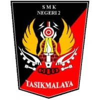

WELCOME TO
Teknik Jaringan Komputer dan Telekomunikasi
Solid dalam kebersamaan, berkembang dalam teknologi.
Jelajahi KelasSelamat datang di website kelas TJKT 1. Website ini menjadi tempat untuk berbagi informasi, dokumentasi kegiatan, dan berbagai cerita dari keluarga besar TJKT 1.
Kami belajar mengenai jaringan komputer, sistem komputer, teknologi informasi, dan berbagai perkembangan teknologi lainnya.
Walaupun berbeda jaringan, kita tetap satu tujuan.
Total Siswa
Program Keahlian
Kelas
Dokumentasi kegiatan TJKT 1.
Kegiatan praktik dan pembelajaran.
Momen bersama TJKT 1.
25 / 28
Teknik Jaringan Komputer dan Telekomunikasi